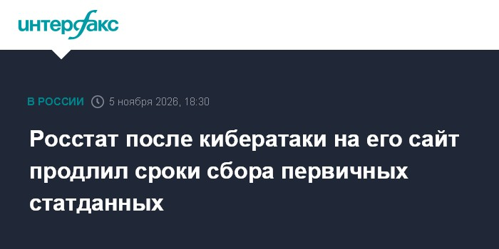

Росстат официально подтвердил серию целевых деструктивных кибератак на свои ресурсы с 29 октября по 1 ноября. В ночь на 1 ноября злоумышленники изменили содержимое официального сайта: на страницах центрального аппарата и региональных подразделений появились посторонние баннеры с надписью «Никому не избежать ответственности» и символика группировок «Киберпартизаны BY» и Silent Crow. 5 ноября ведомство сообщило о возобновлении работы сайта, но предупредило, что часть функций и ИТ-инфраструктуры временно недоступна «в целях безопасности и поэтапного ввода обратно в доступ».
Ответственность взяли на себя «Киберпартизаны BY» и Silent Crow — ранее, по данным СМИ, они же заявляли о причастности к атаке на «Аэрофлот» в июле 2025 года. Хакеры утверждают о доступе к значительной части инфраструктуры ведомства, компрометации около 25 тысяч компьютеров и выгрузке 23 ТБ информации, включая базы данных, внутренние документы и служебную переписку. Независимого подтверждения этих заявлений нет — это версия атакующих, а не установленный факт.
Ведомство факт атак подтвердило, но утечку опровергло: по его заявлению, системы мониторинга вовремя заметили подозрительную активность, а признаков компрометации баз данных и охраняемой законом информации не выявлено. Кто и через какой вектор проник на веб-сервер — вместе с правоохранительными органами устанавливают специалисты ведомства.
Самое заметное последствие для отрасли — сдвиг статистического графика: Росстат продлил до 13 ноября срок предоставления первичных статданных по ряду форм федерального наблюдения. Для всей системы ГосСОПКА это наглядный кейс: даже у федерального органа дефект веб-периметра тянет за собой публичный контур и сроки публикации данных, при этом внутреннее ядро, по официальной версии, не пострадало.
Ориентироваться только на официальные сообщения ведомства: в период восстановлений всегда активны фишинговые клоны и фейковые «зеркала» с «утёкшими базами». Организациям, сдающим отчётность, — учесть новый срок 13 ноября и не передавать данные через сторонние сомнительных сторонних сервисов. Полезная гигиена из этого кейса простая: веб-фронт и базы данных должны разводится так, чтобы дефейс сайта не открывал путь вглубь инфраструктуры, — судя по заявлениям Росстата, именно это и сработало.
⚖️ Справка: группировки «Киберпартизаны BY» и Silent Crow признаны в России экстремистскими организациями, их деятельность на территории РФ запрещена.